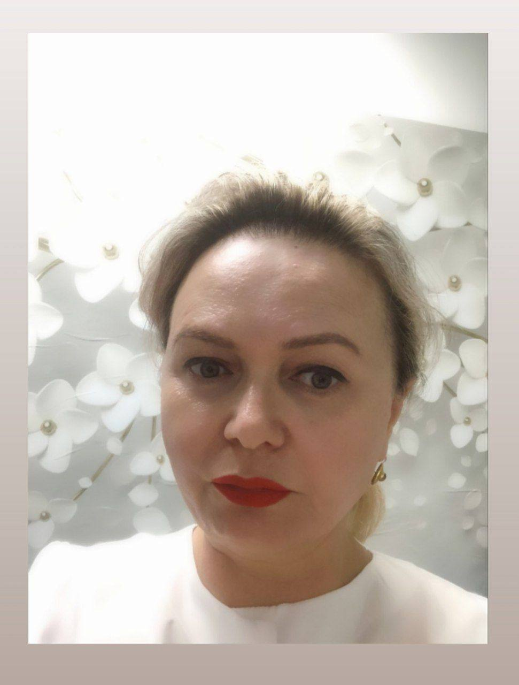

Retreat
Ретрит «Чувства женщины»
Перезагрузка Отдых НаполнениеРаспакуй свои чувства, обрети поддержку и силу женской природы в горах Кавказа
4 дня погружения и трансформации вдали от суеты
С самого рождения ты встречаешься со многими испытаниями и задачами.
Проходя некоторые, ты можешь «заблокировать» свои чувства, чтобы не было больно, чтобы справиться в моменте. И оставляешь части своей души в особенно болезненных ситуациях.
Стрессы на работе и в бизнесе, кризисные ситуации (развод, смена деятельности, утрата и подобное) усугубляются отголосками болезненных ситуаций из детства. Тело не выдерживает и даёт знать через боль, зависимости, лишнего веса.
Представь, что есть в мире место, где можно открыто поговорить об этом опыте, получить поддержку и вернуть все части своей души. Место, где исцелятся даже самые застарелые душевные раны.
Это место — среди других женщин.
Место для исцеления. Место, где ты сможешь обрести свою
ЦЕЛОСТНОСТЬ.
Мы приглашаем тебя в это пространство исцеления и глубокого погружения в женскую суть — на наш психологический ретрит «Чувства Женщины»!
1 — 5 августа, ТебердаЖенский ретрит —это перезагрузка, восстановление и гармонизация внутреннего состояния женщины
В течение 4 дней ты погружаешься в атмосферу уюта, поддержки и вдохновения. Это время, когда можно отвлечься от повседневных забот и полностью сосредоточиться на себе и своих потребностях.
-
Ты сможешь:
- отдохнуть и восстановить силы;
- проработать психологические травмы, найти ответы на свои вопросы;
- глубже понять себя, свои желания и цели;
- освободиться от старых убеждений и открыть новые возможности для своего развития
- завести новые знакомства и получить поддержку;
- насладиться красотами Домбая, панорамой кавказских гор, Джумагатского ущелья
-
Этот ретрит для тебя, если ты:
- Чувствуешь себя одиноко и тебе важны женская поддержка, понимание и принятие
- Испытываешь трудности в отношениях, материнстве или реализации
- Потеряла контакт с собой, своим телом и своей женской силой
- Чувствуешь неуверенность в себе и в своих решениях
- Тяжело переживаешь травматический опыт и хочешь трансформировать его в ценные уроки
- Эмоционально и физически истощена и тебе хочется выдохнуть, перезагрузиться, исцелиться и обрести новые силы и смыслы
Присоединяйся к нам и пройди 4 дня погружения:
- День 1 Сбор в Минеральных водах Дорога до базы отдыха Женский круг, открытие ретрита Медитации
- День 2 Утренние телесные, голосовые практики Расстановки по запросу участниц с Цаганой Персональная терапия по методу ПГТ с Фатимой Практики у реки
- День 3 Поездка на Домбай Расстановки в горах Поездка к водопадам, энергетические практики
- День 4 Утренние практики Нейрографика Купание в чане на фоне гор Женский сакральный круг у костра
- День 5 Практика «Новая Я» Закрытие ретрита Выезд
Фото с прошлого ретрита
Видео-отзывы
Твоя трансформация начинается здесь.
Раннее бронирование гарантирует специальные условия и скидки
Стоимость до 15 июля 45000, после 50000-
Что входит:
- Проживание в красивом и уютном доме в двухместном номере с удобствами
- Полная программа в мини-группе, всего 4 участницы
- Поездки на Домбай, подъём на канатной дороге, поездка на водопады
- Трансфер от Минеральных вод и обратно
Место ретрита:
База отдыха в Теберде, в Джамагатском ущелье с шикарным панорамным видом на горы
Ретрит проводят:
-
Цагана Яшкиева
Системный терапевт (расстановщик) Семейный психолог Бизнес – тренер Автор женских трансформационных программ Руководитель и преподаватель Школы Расстановок 5 лет практической работы в расстановках 8 лет практической работы наставником и тренером -

Фатима Кашежева
Психотерапевт Регрессолог по методу ПГТ (проработка глубинных травм) Мастер медитаций Специалист по access bars Специалист по нейрографике Мастер разборов Предприниматель с опытом среднего бизнеса в сфере торговли более 20 лет, обороты компаний от 10 млн руб в год.